រកមិនឃើញរូបមន្តដែលត្រូវនឹងពាក្យនេះទេ។
១. ឫសការេ (Square Root)
ជាទូទៅ
បើ \(\displaystyle a>0\) និង \(\displaystyle x^{2}=a\) គេបាន \(\displaystyle x=\sqrt{a}\) និង \(\displaystyle x=-\sqrt{a}\)។
២. ឫសគូប (Cube Root)
ជាទូទៅ
បើ \(\displaystyle x^{3}=a\) គេបាន \(\displaystyle x=\sqrt[3]{a}\) ដែល \(\displaystyle a\) អាចវិជ្ជមាន ឬ អវិជ្ជមាន។
៣. ប្រមាណវិធីលើរ៉ាឌីកាល់
៣.១. វិធីគុណរ៉ាឌីកាល់ (Multiplication of Radicals)
ជាទូទៅ
ផលគុណនៃរ៉ាឌីកាល់ដែលមានសន្ទស្សន៍ដូចគ្នាស្មើនឹងរ៉ាឌីកាល់នៃផលគុណ៖
| \(\displaystyle \sqrt{a}\times\sqrt{b}=\sqrt{ab}\) | \(\displaystyle a\ge 0 \quad , \quad b\ge 0\) |
| \(\displaystyle \sqrt[3]{a}\times\sqrt[3]{b}=\sqrt[3]{ab}\) | \(\displaystyle a \quad , \quad b\) អាចវិជ្ជមានឬអវិជ្ជមាន ។ |
៣.២. វិធីចែករ៉ាឌីកាល់ (Division of Radicals)
ជាទូទៅ
ផលចែកនៃរ៉ាឌីកាល់ដែលមានសន្ទស្សន៍ដូចគ្នាស្មើនឹងរ៉ាឌីកាល់នៃផលចែក៖
| \(\displaystyle \dfrac{\sqrt{a}}{\sqrt{b}}=\sqrt{\dfrac{a}{b}}\) | , \(\displaystyle a\ge 0 \quad , \quad b>0\) ។ |
| \(\displaystyle \dfrac{\sqrt[3]{a}}{\sqrt[3]{b}}=\sqrt[3]{\dfrac{a}{b}}\) | , \(\displaystyle b\neq 0\) ។ |
៣.៣. ការបញ្ចេញមួយចំនួនពីរ៉ាឌីកាល់
ជាទូទៅ
ដើម្បីបញ្ចេញមួយចំនួនពីរ៉ាឌីកាល់ គេត្រូវបំបែកវាជាស្វ័យគុណដែលមាននិទស្សន្តស្មើនឹងសន្ទស្សន៍នៃរ៉ាឌីកាល់។
ចំពោះរ៉ាឌីកង់ជាអថេរ
\[\sqrt{x^2} = |x| = \begin{cases}
\phantom{-}x, & \text{បើ } x \ge 0 \\
-x, & \text{បើ } x < 0
\end{cases} \qquad\qquad \sqrt[3]{x^3} = x\]
៣.៤.ការបញ្ចូលមួយចំនួនក្នុងរ៉ាឌីកាល់
ជាទូទៅ
ដើម្បីបញ្ចូលមួយចំនួនទៅក្នុងរ៉ាឌីកាល់ គេត្រូវលើកចំនួននោះជាស្វ័យគុណដោយឱ្យនិទស្សន្តនៃស្វ័យគុណស្មើនឹងសន្ទស្សន៍នៃរ៉ាឌីកាល់។
| \(\displaystyle x\sqrt{y} = \sqrt{x^2y}\) | , \(\displaystyle x\ge 0 \quad , \quad y\ge 0\) |
| \(\displaystyle x\sqrt[3]{y} = \sqrt[3]{x^3y}\) | , \(\displaystyle x \quad , \quad y\) អាចវិជ្ជមានឬអវិជ្ជមាន ។ |
៣.៥. វិធីបូក និងវិធីដកនៃរ៉ាឌីកាល់
ជាទូទៅ
ដើម្បីគណនាផលបូកនិងផលដករ៉ាឌីកាល់ដែលមានសន្ទស្សន៍ដូចគ្នា គេត្រូវបំប្លែងរ៉ាឌីកង់ឱ្យដូចគ្នា ។
ដើម្បីគណនាផលបូកនិងផលដករ៉ាឌីកាល់ដែលមានរ៉ាឌីកង់ដូចគ្នានិងមានសន្ទស្សន៍ដូចគ្នា គេបូក-ដកមេគុណនឹងមេគុណ ហើយរ៉ាឌីកាល់ទុកដដែល។
\(\displaystyle a\sqrt{x} \pm b\sqrt{x} = (a\pm b)\sqrt{x} \qquad , \quad x \ge 0\)
៣.៦. វិធីបំបាត់រ៉ាឌីកាល់ពីភាគបែង
ជាទូទៅគេមិនទុកឱ្យចំនួនដែលមានរ៉ាឌីកាល់នៅភាគបែងទេ ។ ខាងក្រោមនេះជាវិធីបំបាត់រ៉ាឌីកាល់ពីភាគបែង ។
ករណីភាគបែងមានមួយតួ (ឫសការេ)
ជាទូទៅ
ដើម្បីបំបាត់រ៉ាឌីកាល់ពីភាគបែងដែលមានមួយតួនិងសន្ទស្សន៍ពីរ គេត្រូវគុណទាំងភាគយកនិងភាគបែង នឹងរ៉ាឌីកាល់នៃភាគបែងនោះ។
\(\displaystyle \dfrac{c}{\sqrt{a}} = \dfrac{c\times\sqrt{a}}{\sqrt{a}\times\sqrt{a}} = \dfrac{c\sqrt{a}}{a} \qquad , \quad a > 0\)
ករណីភាគបែងមានមួយតួ (ឫសគូប)
ជាទូទៅ
ដើម្បីបំបាត់រ៉ាឌីកាល់ពីភាគបែងដែលមានមួយតួនិងសន្ទស្សន៍បី (ឫសគូប) គេត្រូវគុណទាំងភាគយកនិងភាគបែង នឹង រ៉ាឌីកាល់បំពេញ នៃភាគបែងនោះ។
\(\displaystyle \dfrac{c}{\sqrt[3]{a}} = \dfrac{c\times\sqrt[3]{a^2}}{\sqrt[3]{a}\times\sqrt[3]{a^2}} = \dfrac{c\sqrt[3]{a^2}}{a} \qquad , \quad a \neq 0\)
\(\displaystyle \dfrac{c}{\sqrt[3]{a^2}} = \dfrac{c\times\sqrt[3]{a}}{\sqrt[3]{a^2}\times\sqrt[3]{a}} = \dfrac{c\sqrt[3]{a}}{a} \qquad , \quad a \neq 0\)
ករណីភាគបែងមាន ២ តួ (ឫសការេ)
ជាទូទៅ
ដើម្បីបំបាត់រ៉ាឌីកាល់ពីភាគបែងដែលមាន ២ តួ (ឫសការេ) គេត្រូវគុណទាំងភាគយក និងភាគបែង នឹង កន្សោមឆ្លាស់ នៃភាគបែងនោះ។
\(\displaystyle \dfrac{A}{\sqrt{a}-\sqrt{b}} = \dfrac{A(\sqrt{a}+\sqrt{b})}{(\sqrt{a}-\sqrt{b})(\sqrt{a}+\sqrt{b})} = \dfrac{A(\sqrt{a}+\sqrt{b})}{a-b}\)
\(\displaystyle \dfrac{A}{\sqrt{a}+\sqrt{b}} = \dfrac{A(\sqrt{a}-\sqrt{b})}{(\sqrt{a}+\sqrt{b})(\sqrt{a}-\sqrt{b})} = \dfrac{A(\sqrt{a}-\sqrt{b})}{a-b}\)
ករណីភាគបែងមាន ២ តួ (ឫសគូប)
ជាទូទៅ
ដើម្បីបំបាត់រ៉ាឌីកាល់ពីភាគបែងដែលមាន ២ តួ (ឫសគូប) គេត្រូវគុណទាំងភាគយក និងភាគបែង នឹង កន្សោមបំពេញ នៃភាគបែងនោះ។
\(\displaystyle \begin{aligned}
\dfrac{A}{\sqrt[3]{a} - \sqrt[3]{b}} &= \dfrac{A(\sqrt[3]{a^2} + \sqrt[3]{ab} + \sqrt[3]{b^2})}{(\sqrt[3]{a} - \sqrt[3]{b})(\sqrt[3]{a^2} + \sqrt[3]{ab} + \sqrt[3]{b^2})} \\[0.3em]
&= \dfrac{A(\sqrt[3]{a^2} + \sqrt[3]{ab} + \sqrt[3]{b^2})}{a - b}
\end{aligned}\)
\(\displaystyle \begin{aligned}
\dfrac{A}{\sqrt[3]{a} + \sqrt[3]{b}} &= \dfrac{A(\sqrt[3]{a^2} - \sqrt[3]{ab} + \sqrt[3]{b^2})}{(\sqrt[3]{a} + \sqrt[3]{b})(\sqrt[3]{a^2} - \sqrt[3]{ab} + \sqrt[3]{b^2})} \\[0.3em]
&= \dfrac{A(\sqrt[3]{a^2} - \sqrt[3]{ab} + \sqrt[3]{b^2})}{a + b}
\end{aligned}\)
១. ទំណោទដែលទាក់ទងនឹងសមាមាត្រ (Proportions)
ជាទូទៅ
ក្នុងសមាមាត្រ \(\displaystyle \dfrac{a}{b}=\dfrac{c}{d}\) នោះគេទាញបាន \(\displaystyle a\times d=b\times c\)។
ខ្នាតរង្វាស់រង្វាល់អន្តរជាតិ (International Measurement Units)
\(\displaystyle 1 ~\mathrm{mile} \text{ (ម៉ាយ)} \approx 1.609 ~\mathrm{km}\)
\(\displaystyle 1 ~\mathrm{inch} \text{ (អ៊ីញ)} \approx 2.54 ~\mathrm{cm}\)
\(\displaystyle 1 ~\mathrm{feet} \text{ (ហ្វីត)} \approx 0.3048 ~\mathrm{m}\)
\(\displaystyle 1 ~\mathrm{lb} \text{ (ផោន)} \approx 0.453 ~\mathrm{kg}\)
២. ទំណោទដែលទាក់ទងនឹងភាគរយ (Percentages)
ជាទូទៅ
ភាគរយនៃ \(\displaystyle a\) ធៀបនឹង \(\displaystyle b\) កំណត់ដោយ៖ \(\displaystyle \dfrac{a}{b}\times 100\%\)។
៣. ទំណោទនៃភាគរយកើន ឬ ថយ
ជាទូទៅ
• បើគេបង្កើនពី \(\displaystyle a\) ទៅ \(\displaystyle b\) នោះភាគរយនៃកំណើន
កំណត់ដោយ៖ \(\displaystyle \dfrac{b-a}{a}\times 100\%\)
• បើគេបន្ថយពី \(\displaystyle b\) មក \(\displaystyle a\) នោះភាគរយនៃតំហយ
កំណត់ដោយ៖ \(\displaystyle \dfrac{b-a}{b}\times 100\%\)
៤. ការប្រាក់សមាស (Compound Interest)
ជាទូទៅ
បើ \(\displaystyle P_{0}\) ជាប្រាក់ដើម \(\displaystyle r\) ជាអត្រាការប្រាក់ក្នុងមួយឆ្នាំ ហើយ \(\displaystyle t\) ជារយៈពេលនៃការដាក់យកកម្រៃ នោះយើងបាន៖
ប្រាក់ឆ្នាំទី 1 ៖ \(\displaystyle P_{1}=P_{0}(1+r)\)
ប្រាក់ឆ្នាំទី 2 ៖ \(\displaystyle P_{2}=P_{0}(1+r)^{2}\)
ប្រាក់ឆ្នាំទី 3 ៖ \(\displaystyle P_{3}=P_{0}(1+r)^{3}\)
…
ប្រាក់សរុបនៅឆ្នាំទី \(\displaystyle t\) គឺ ៖ \(\displaystyle P_{t}=P_{0}(1+r)^{t}\)
១. ផលគុណនៃកន្សោមពីជគណិត
ដើម្បីពន្លាតផលគុណនៃពីរកត្តា យើងយកគ្រប់តួនៃកត្តាទី១ គុណនឹងគ្រប់តួនៃកត្តាទី២ រួចបង្រួមលទ្ធផល៖
\(\displaystyle a(b \pm c)=ab \pm ac\)។
រូបមន្ត សមភាពសំខាន់ៗ
- ការេទ្វេធា \(\displaystyle (a + b)^2 = a^2 + 2ab + b^2\)
- ការេទ្វេធា \(\displaystyle (a - b)^2 = a^2 - 2ab + b^2\)
- ផលសងការេ \(\displaystyle (a - b)(a + b) = a^2 - b^2\)
- ផលសងគូប \(\displaystyle (a - b)(a^2 + ab + b^2) = a^3 - b^3\)
- ផលបូកគូប \(\displaystyle (a + b)(a^2 - ab + b^2) = a^3 + b^3\)
២. ការដាក់កន្សោមជាផលគុណនៃកត្តា (Factoring Expressions)
២.១. ការដាក់ជាកត្តារួម
គេប្រើរូបមន្ត \(\displaystyle ka\pm kb=k(a\pm b)\) ដែល \(\displaystyle k\) ជាកត្តារួម។
២.២. ការដាក់ជាកត្តារួម
\(\displaystyle a^{2}\pm 2ab+b^{2}=(a\pm b)^{2}\)
\(\displaystyle a^{2}-b^{2}=(a-b)(a+b)\)
២.៣. វិធីគុណខ្វែង (AC Method)
ដាក់ជាផលគុណកត្តា \(\displaystyle Ax^2+Bx+C\)
- បំបែកតួ \(\displaystyle A\) និងតួ \(\displaystyle C\) ជាផលគុណកត្តា រួចរៀបជាជួរឈរ។
- គុណខ្វែងសាកល្បង រួចបូកលទ្ធផលចូលគ្នា មើលថាតើវាស្មើនឹងតួកណ្តាល \(\displaystyle B\) ដែរឬទេ?
- បើស្មើ នោះចម្លើយគឺការយកតួតាមជួរដេកនីមួយៗមកផ្គុំគ្នា។
២.៤. វិធីបំពេញនិងបន្ថយតួ (Completing the Square)
ដាក់ជាផលគុណកត្តា \(\displaystyle x^2+Bx+C\)
- យកមេគុណនៃតួ \(\displaystyle x\) ចែកនឹង២ រួចលើកជាការេ៖ \(\displaystyle \left(\frac{B}{2}\right)^2\) ដើម្បីបាន «តួបំពេញ»។
- បូកតួបំពេញនេះ រួចដកវាចេញវិញភ្លាម ហើយផ្តុំ៣តួដំបូងចូលរូបមន្តការេនៃទ្វេធា \(\displaystyle (x + \frac{B}{2})^2\)។
- បូកដកលេខដែលសល់ រួចប្រើរូបមន្តផលសងការេ \(\displaystyle a^2 - b^2\) បើអាច។
ចំណាំ
- ករណី \(\displaystyle Ax^2+Bx+C \ (A \neq 1)\): ត្រូវទាញ \(\displaystyle A\) ជាកត្តារួមពីពីរតួដំបូងសិន \(\displaystyle A\left(x^2 + \frac{B}{A}x\right) + C\) ទើបរកតួបំពេញ។
- ករណីមេគុណ \(\displaystyle B\) ជាចំនួនសេស: គប្បីរក្សា \(\displaystyle \frac{B}{2}\) ជាប្រភាគដដែល កុំបំបែកជាទសភាគ ដើម្បីងាយស្រួលផ្តុំចូលរូបមន្ត។
៣. ប្រមាណវិធីលើកន្សោមសនិទាន
៣.១. វិធីបូកនិងវិធីដកកន្សោមសនិទាន
ជាទូទៅ ៖ ដើម្បីបូកឬដកកន្សោមសនិទាន
- ដាក់ភាគយកនិងភាគបែងនៃប្រភាគជាផលគុណនៃកត្តា
- សម្រួលប្រភាគនីមួយៗបើអាច
- តម្រូវភាគបែងរួម
- បូកឬដកភាគយកដោយរក្សាទុកភាគបែងរួម
- សម្រួលលទ្ធផលបើអាច ។ (ដោយឱ្យកត្តាសម្រួលខុសពីសូន្យ) ។
\(\displaystyle \dfrac{A}{B} \pm \dfrac{C}{D} = \dfrac{A \times D \pm B \times C}{B \times D}\)
សម្គាល់
យើងចាត់ទុកកត្តាដែលត្រូវសម្រួលជាកត្តាមិនសូន្យ ហេតុនេះយើងមិនតម្រូវឱ្យមានការបញ្ជាក់តម្លៃអថេរដែលនាំឱ្យកត្តានោះស្មើនឹងសូន្យឡើយ។
៣.២. វិធីគុណនិងវិធីចែកកន្សោមសនិទាន
ជាទូទៅ ៖ ដើម្បីគុណឬចែកកន្សោមសនិទាន
- ដាក់ភាគយកនិងភាគបែងនៃប្រភាគជាផលគុណនៃកត្តា
- ចំពោះវិធីគុណគេគុណភាគយកនិងភាគយក ភាគបែងនិងភាគបែង
\(\displaystyle \dfrac{A}{B} \times \dfrac{C}{D} = \dfrac{A \times C}{B \times D}\)
- ចំពោះវិធីចែកគេគុណប្រភាគតំណាងចែកនិងចម្រាស់នៃប្រភាគតួចែក ហើយសម្រួលលទ្ធផលបើអាច ។
\(\displaystyle \dfrac{A}{B} \div \dfrac{C}{D} = \dfrac{A}{B} \times \dfrac{D}{C} = \dfrac{A \times D}{B \times C}\)
មេរៀន សមីការដឺក្រេទី១មានមួយអញ្ញាតអានមេរៀនពេញ →
១. សមីការដឺក្រេទី១មានមួយអញ្ញាត
វិធាននៃការប្តូរអង្គ (Rules of Transposition)
ក្នុងប្រតិបត្តិ គេអាចលើកតួមានអញ្ញាតទៅអង្គម្ខាងនិងតួគ្មានអញ្ញាតទៅអង្គម្ខាងទៀត។ តួណាត្រូវប្ដូរអង្គត្រូវប្ដូរសញ្ញារួចធ្វើប្រមាណវិធី
(ពីបូកទៅដក, ពីដកទៅបូក, ពីគុណទៅចែក, ពីចែកទៅគុណ)។x
រូបមន្ត
\[\begin{aligned}
ax=b &\Rightarrow x=\dfrac{b}{a}\quad (a\neq 0)\\
ax=0 &\Rightarrow x=0\quad (a\neq 0)\\
0x=0 &\Rightarrow x \text{ មានតម្លៃគ្រប់ចំនួន}\\
0x=b &\Rightarrow \text{គ្មានចម្លើយ}\quad (b\neq 0)
\end{aligned}\]
២. សមីការដែលមានភាគបែងជាលេខ
វិធាន
ដើម្បីដោះស្រាយសមីការដឺក្រេទី១ មានមួយអញ្ញាតដែលមានភាគបែងជាលេខ គេត្រូវ ៖
- តម្រូវភាគបែងរួមនៃអង្គទាំងពីររបស់សមីការរួចលុបភាគបែងរួមចោល ។
- លើកតួមានអញ្ញាតទៅអង្គម្ខាងនិងតួគ្មានអញ្ញាតទៅអង្គម្ខាងទៀត ។
តួណាត្រូវប្ដូរអង្គត្រូវប្ដូរសញ្ញារួចធ្វើប្រមាណវិធី ។
៣. សមីការដែលអង្គទី១ជាផលគុណនៃកត្តា
ជាទូទៅ
វិធាន ៖ ដើម្បីដោះស្រាយសមីការមានមួយអញ្ញាតដែលអង្គទី១មានអញ្ញាតជាដឺក្រេទី២ គេត្រូវសរសេរអង្គទី១ជាផលគុណកត្តានៃដឺក្រេទី១ ។
រូបមន្ត
បើ \(\displaystyle A \times B = 0\) នោះ គេបាន \(\displaystyle A = 0\) ឬ \(\displaystyle B = 0\) ។
តាមឌីសគ្រីមីណង់ \(\displaystyle \Delta\) (Using Discriminant \(\displaystyle \Delta\))
ជាទូទៅ
ចំពោះសមីការដឺក្រេទីពីរមានរាងទូទៅ \(\displaystyle ax^2 + bx + c = 0\) (ដែល \(\displaystyle a \neq 0\)) តាមឌីសគ្រីមីណង់៖ \(\displaystyle \Delta = b^2 - 4ac\)
យោងតាមតម្លៃនៃ \(\displaystyle \Delta\) មាន ៣ ករណី៖
- បើ \(\displaystyle \Delta > 0\) ៖ សមីការមានឫសពីរផ្សេងគ្នា គឺ
\(\displaystyle \displaystyle x_1 = \frac{-b - \sqrt{\Delta}}{2a}\) និង \(\displaystyle \displaystyle x_2 = \frac{-b + \sqrt{\Delta}}{2a}\) ។ - បើ \(\displaystyle \Delta = 0\) ៖ សមីការមានឫសឌុប គឺ \(\displaystyle \displaystyle x_1 = x_2 = \frac{-b}{2a}\) ។
- បើ \(\displaystyle \Delta < 0\) ៖ សមីការគ្មានឫសជាចំនួនពិតទេ។
៤.ចំណោទសមីការដឺក្រេទី១មានមួយអញ្ញាត
ជាទូទៅ
១. សម្មតិកម្ម និង សំណួរ៖ តើប្រធានប្រាប់អ្វីខ្លះ? តើគេសួររកអ្វី?
២. តាងអញ្ញាត៖ តាងអក្សរជំនួសអ្វីដែលគេសួរ (កុំភ្លេចដាក់លក្ខខណ្ឌ)។
៣. សរសេរសមីការ៖ បកប្រែប្រធានចំណោទទៅជាសមីការគណិតវិទ្យា។
៤. ដោះស្រាយសមីការ៖ គណនារកតម្លៃនៃអញ្ញាតនោះ។
៥. ផ្ទៀងផ្ទាត់ និង សន្និដ្ឋាន៖ យកចម្លើយទៅផ្ទៀងផ្ទាត់ រួចសរសេរឆ្លើយ។
មេរៀន វិសមីការដឺក្រេទី១មានមួយអញ្ញាតអានមេរៀនពេញ →
១. លក្ខណៈនៃវិសមភាព
១.១. ប្រមាណវិធីបូក-ដក
ជាទូទៅ
បើគេបូក ឬដកចំនួនតែមួយលើអង្គទាំងពីរនៃវិសមភាព គេបានវិសមភាពថ្មីដែលមានទិសដៅដូចវិសមភាពដើម ។
បើ \(\displaystyle a > b\) នោះ \(\displaystyle \begin{array}{l} a + c > b + c \\[0.1cm] a - c > b - c \end{array}\)
១.២. ប្រមាណវិធីគុណ-ចែក
ជាទូទៅ
• បើគេគុណ ឬចែកអង្គទាំងពីរនៃវិសមភាពនឹងចំនួនវិជ្ជមានតែមួយ គេបានវិសមភាពថ្មីដែលមានទិសដៅដូចវិសមភាពដើម ។
\(\displaystyle a > b \begin{cases} ac > bc \\ a \div c > b \div c \end{cases}\) បើ \(\displaystyle c > 0\)
• បើគេគុណ ឬចែកអង្គទាំងពីរនៃវិសមភាពនឹងចំនួនអវិជ្ជមានតែមួយ
គេបានវិសមភាពថ្មីមានទិសដៅផ្ទុយពីវិសមភាពដើម ។
\(\displaystyle a > b \begin{cases} ac < bc \\ a \div c < b \div c \end{cases}\) បើ \(\displaystyle c < 0\)
២. វិសមីការដឺក្រេទី១មានមួយអញ្ញាត
- សញ្ញា \(\displaystyle <\) ឬ \(\displaystyle >\) ៖ មិនយកតម្លៃត្រង់នោះ ប្រើ វង់ក្រចកបើក ( ឬ វង់ក្រចកបិទ ) ។
- សញ្ញា \(\displaystyle \le\) ឬ \(\displaystyle \ge\) ៖ យកតម្លៃត្រង់នោះ ប្រើ ដង្កៀបបើក [ ឬ ដង្កៀបបិទ ] ។
- ចំណាំ៖ វង់ក្រចក និងដង្កៀប ត្រូវតែហាមាត់ឆ្ពោះទៅរកបន្ទាត់ដិត (បន្ទាត់ចម្លើយ) ជានិច្ច!
ចំណាំ
\[0x \le 0\]
ទោះ \(\displaystyle x\) យកតម្លៃណាក៏អង្គទី 1 នៅតែស្មើនឹងអង្គទី 2 ដដែល ។
ដូចនេះ វិសមីការមានចម្លើយចំពោះគ្រប់តម្លៃនៃ \(\displaystyle x\)
៣. ប្រព័ន្ធវិសមីការដឺក្រេទី១មានមួយអញ្ញាត
ការដោះស្រាយប្រព័ន្ធវិសមីការគឺ៖
១. ដោះស្រាយវិសមីការនីមួយៗដាច់ដោយឡែកពីគ្នា។
២. យកចម្លើយទាំងពីរមកគូសត្រួតស៊ីគ្នានៅលើក្រាបតែមួយ។
៣. តំបន់ណាដែលវាប្រសព្វគ្នា នោះហើយជាចម្លើយរួមរបស់វា។
គន្លឹះ៖ ទម្លាក់ខ្សែបន្ទាត់ឈរពីចំណុចព្រំដែនចុះមកក្រោម តំបន់ណាដែលមាន បន្ទាត់ដិតទាំងពីរជាន់គ្នា ទីនោះជាចម្លើយរួម!
៤. ចំណោទ
ជាទូទៅ
ដើម្បីដោះស្រាយចំណោទវិសមីការ គេត្រូវ
១. តាងអញ្ញាត៖ ជ្រើសរើសអញ្ញាត និងដាក់លក្ខខណ្ឌ។
២. សរសេរវិសមីការ៖ សរសេរតាមបម្រាប់ប្រធាន ទៅជាវិសមីការ ឬប្រព័ន្ធវិសមីការ។
៣. ដោះស្រាយ៖ គណនារកចម្លើយនៃវិសមីការនោះ។
៤. ផ្ទៀងផ្ទាត់ និង សន្និដ្ឋាន៖ ផ្ទៀងផ្ទាត់លទ្ធផល រួចសរសេរឆ្លើយតបទៅនឹងសំណួរ។
១. ការផ្តុំទិន្នន័យជាប្រេកង់ធៀប (Relative Frequency)
ជាទូទៅ
ផលធៀបរវាងប្រេកង់ និងប្រេកង់សរុបហៅថា ប្រេកង់ធៀប ។ គេតែងតែគិតប្រេកង់ធៀបជាភាគរយ ។
\[\text{ប្រេកង់ធៀប} = \frac{\text{ប្រេកង់}\rule[-0.5em]{0pt}{1.55em}}{\text{ប្រេកង់សរុប}\rule[-0.5em]{0pt}{1.55em}} \times 100\%\]
២. ការផ្តុំទិន្នន័យជាប្រេកង់កើន និង ថយ
ជាទូទៅ
- ប្រេកង់កើន (Cumulative Frequency): ជាប្រេកង់ដែលបានដោយ បូក ប្រេកង់បន្តបន្ទាប់ពីលើចុះក្រោម។
- ប្រេកង់ថយ (Descending Frequency): ជាប្រេកង់ដែលបានដោយ ដក ប្រេកង់សរុបនឹងប្រេកង់បន្តបន្ទាប់ពីលើចុះក្រោម។
ចំណាំ
- គេប្រើ ប្រេកង់កើន សម្រាប់ឆ្លើយសំណួររកចំនួន «យ៉ាងច្រើន...»។
- គេប្រើ ប្រេកង់ថយ សម្រាប់ឆ្លើយសំណួររកចំនួន «យ៉ាងតិច...»។
៣. ការផ្ដុំទិន្នន័យជាថ្នាក់ (Grouped Data)
នៅពេលទិន្នន័យមានច្រើន និងរាយប៉ាយ គេត្រូវផ្តុំវាជាថ្នាក់ៗ (ឧទាហរណ៍ \(\displaystyle 30-40\))។
ផ្ចិតនៃថ្នាក់ (Class Center): ជាតម្លៃកណ្តាល ឬមធ្យមនៃចុងទាំងពីរនៃថ្នាក់។ គេប្រើវាជាតំណាងឱ្យថ្នាក់ទាំងមូលដើម្បីគណនាមធ្យមភាគ។
\[\text{ផ្ចិតនៃថ្នាក់ } a - b \text{ គឺ } \frac{a + b}{2}\]
ការបកស្រាយទិន្នន័យជាក្រាប (Graphical Representation of Data)
ចំណាំ
- ក្រាបសសរ (Bar Chart): ប្រើសម្រាប់ទិន្នន័យទោល ។
- អ៊ីស្តូក្រាម (Histogram): ប្រើសម្រាប់ទិន្នន័យដែលផ្តុំជាថ្នាក់ ។
- ពហុកោណប្រេកង់: ប្រើសម្រាប់ក្រាបប្រេកង់កើន ឬ ប្រេកង់ថយ ។
គេប្រើចំណុចប្រសព្វរបស់វាសម្រាប់រក មេដ្យាន ។
១. មធ្យម \(\displaystyle \bar{x}\) (Mean)
ជាទូទៅ
- មធ្យមនៃទិន្នន័យគ្មានប្រេកង់៖ ផលបូកទិន្នន័យចែកនឹងចំនួនតួនៃទិន្នន័យ។
\[\bar{x}=\frac{x_1+x_2+\cdots+x_n}{n}\]
- មធ្យមនៃទិន្នន័យមានប្រេកង់៖ ផលបូក(ទិន្នន័យ \(\displaystyle \times\) ប្រេកង់)ចែកនឹងផលបូកប្រេកង់។
\[\bar{x} = \frac{x_1 f_1 + x_2 f_2 + \dots + x_n f_n}{f_1 + f_2 + \dots + f_n} = \frac{\sum x_i f_i}{\sum f_i}\]
ចំណាំ
បើទិន្នន័យជាថ្នាក់ ត្រូវរក «ផ្ចិតនៃថ្នាក់» ធ្វើជាតំណាង \(\displaystyle x_i\) សិន រួចអនុវត្តរូបមន្តមានប្រេកង់ខាងលើ។
២. មេដ្យាន \(\displaystyle m_e\) (Median)
ជាទូទៅ
បើទិន្នន័យមួយមាន \(\displaystyle n\) តួ មេដ្យាននៃទិន្នន័យមួយដែលបានរៀបតាមលំដាប់មានទីតាំងស្ថិតនៅតួទី \(\displaystyle \frac{n+1}{2}\) ។
| - បើ \(\displaystyle n\) ជាចំនួនសេស | មេដ្យានជាតម្លៃនៃតួកណ្តាល |
| - បើ \(\displaystyle n\) ជាចំនួនគូ | មេដ្យានជាមធ្យមនៃតម្លៃកណ្តាលទាំងពីរ ។ |
ចំណាំ
គេប្រើប្រេកង់កើន ដើម្បីងាយស្រួលរកទីតាំងរបស់មេដ្យាន \(\displaystyle \frac{n+1}{2}\)
ថាតើវាស្ថិតនៅទិន្នន័យមួយណា។
៣. ម៉ូត \(\displaystyle m_o\) (Mode)
ជាទូទៅ
នៅក្នុងទិន្នន័យមួយ ម៉ូត ជាតម្លៃនៃទិន្នន័យដែលមានប្រេកង់ធំជាងគេ ។
ពេលណាត្រូវប្រើ មធ្យម មេដ្យាន និង ម៉ូត?
- មធ្យម (\(\displaystyle \bar{x}\))៖ ល្អបំផុតពេលទិន្នន័យមានតម្លៃប្រហាក់ប្រហែលគ្នា (គ្មានតម្លៃណាធំ ឬតូចខុសគេពេក)។
- មេដ្យាន (\(\displaystyle m_e\))៖ ល្អបំផុតពេលមានទិន្នន័យណាមួយតូចខ្លាំង ឬធំខ្លាំងខុសគេ (ព្រោះវាគិតតែតួកណ្តាល)។
- ម៉ូត (\(\displaystyle m_o\))៖ ល្អបំផុតពេលចង់ដឹងពី «ចំណូលចិត្តភាគច្រើន» ឬ «លក់ដាច់ជាងគេ»។ វាអាចប្រើសម្រាប់ទិន្នន័យដែលមិនមែនជាលេខបានផងដែរ។
១. ប្រូបាបនៃព្រឹត្តិការណ៍ (Probability of an Event)
ជាទូទៅ
ប្រូបាបនៃព្រឹត្តិការណ៍ \(\displaystyle A\) ណាមួយ ជាផលធៀបរវាងចំនួនករណីស្របនឹងព្រឹត្តិការណ៍ \(\displaystyle A\) នោះនឹងចំនួនករណីអាច ឬលទ្ធផលអាច ។
គេបាន \(\displaystyle P(A) = \dfrac{\text{ចំនួនករណីស្រប}\rule[-0.5em]{0pt}{1.55em}}{\text{ចំនួនករណីអាច}\rule[-0.5em]{0pt}{1.55em}}\)
ចំណាំ
ប្រូបាបតែងតែនៅចន្លោះ \(\displaystyle 0\) និង \(\displaystyle 1\) (\(\displaystyle 0 \le P \le 1\))។
២. ប្រូបាបនៃព្រឹត្តិការណ៍បំពេញ (Complementary Probability)
ជាទូទៅ
ផលបូកប្រូបាបនៃព្រឹត្តិការណ៍មួយ និងព្រឹត្តិការណ៍បំពេញរបស់វាមានតម្លៃស្មើនឹង \(\displaystyle 1\) ។
បើ \(\displaystyle P(A)\) ជាប្រូបាបនៃព្រឹត្តិការណ៍ \(\displaystyle A\) និង \(\displaystyle P(\bar{A})\) ជាប្រូបាបនៃព្រឹត្តិការណ៍បំពេញនៃ \(\displaystyle A\) នោះគេបាន :
\[P(A) + P(\bar{A}) = 1\]
៣. គោលការណ៍បូកប្រូបាប (Addition Rule of Probability)
ជាទូទៅ
ព្រឹត្តិការណ៍ពីរ \(\displaystyle A\) និង \(\displaystyle B\) មិនកើតឡើងព្រមគ្នា ឬមិនកើតរួមហៅថា ព្រឹត្តិការណ៍ដាច់គ្នា ។
\[P(A \text{ ឬ } B) = P(A) + P(B)\]
ចំណាំ
ផលបូកនៃប្រូបាបទាំងអស់ក្នុងវិញ្ញាសាតែមួយ ត្រូវស្មើនឹង \(\displaystyle 1\) ជានិច្ច។
៤. គោលការណ៍ផលគុណប្រូបាប (Multiplication Rule of Probability)
ជាទូទៅ
ព្រឹត្តិការណ៍ពីរ \(\displaystyle A\) និង \(\displaystyle B\) មិនទាក់ទងគ្នា កាលណាព្រឹត្តិការណ៍មួយកើតឡើង ឬមិនកើតឡើងមិនមានឥទ្ធិពលទៅលើព្រឹត្តិការណ៍មួយទៀត ។
\[P(A \text{ និង } B) = P(A) \times P(B)\]
ព្រឹត្តិការណ៍ទាក់ទងគ្នា (Dependent Events): ជាការពិសោធន៍ដែលធ្វើឡើងច្រើនដង ហើយលក្ខខណ្ឌគឺ «ចាប់រួចមិនដាក់វិញ»។ លទ្ធផលនៃការពិសោធន៍ទី១ មានឥទ្ធិពលធ្វើឱ្យប្រែប្រួល «ចំនួនករណីអាច» នៃការពិសោធន៍បន្ទាប់។
\[P(A \text{ និង } B) = P(A) \times P(B/A)\]
៥. ប្រូបាបពិសោធ និងការទស្សន៍ទាយចំនួន
ការធ្វើពិសោធន៍ច្រើនដង អាចជួយយើងទស្សន៍ទាយរកចំនួនពិតប្រាកដនៃវត្ថុណាមួយបាន (ឧទាហរណ៍៖ ទាយចំនួនឃ្លីក្នុងថង់)។
ទំនាក់ទំនងរវាងប្រូបាបទ្រឹស្តី និងប្រូបាបពិសោធ៖
\[\frac{\text{ចំនួនរំពឹងទុកពិត}\rule[-0.5em]{0pt}{1.55em}}{\text{ចំនួនសរុបពិត}\rule[-0.5em]{0pt}{1.55em}} \approx \frac{\text{ចំនួនដងកើតក្នុងការពិសោធ}\rule[-0.5em]{0pt}{1.55em}}{\text{ចំនួនដងពិសោធសរុប}\rule[-0.5em]{0pt}{1.55em}}\]
សន្និដ្ឋាន
ឱ្យតែដឹងចំនួនឃ្លីសរុប គេអាចដឹងចំនួនឃ្លីនៃពណ៌នីមួយៗដោយពិសោធចាប់ឃ្លីចេញពីថង់ច្រើនដង ។
១. ចម្ងាយរវាងពីរចំណុច (Distance Between Two Points)
ជាទូទៅ
ចម្ងាយរវាងពីរចំណុច \(\displaystyle A(x_1, y_1)\) និង \(\displaystyle B(x_2, y_2)\) ក្នុងប្លង់កូអរដោនេ កំណត់ដោយ៖
\[AB = \sqrt{(x_2 - x_1)^2 + (y_2 - y_1)^2}\]
២. កូអរដោនេនៃចំណុចកណ្ដាល (Midpoint Coordinates)
ជាទូទៅ
បើ \(\displaystyle M\) ជាចំណុចកណ្ដាលនៃអង្កត់ \(\displaystyle AB\) ដែល \(\displaystyle A(x_A, y_A)\) និង \(\displaystyle B(x_B, y_B)\) នោះកូអរដោនេនៃចំណុច \(\displaystyle M(x_M, y_M)\) កំណត់ដោយ ៖
\[x_M = \frac{x_A + x_B}{2} \ , \ y_M = \frac{y_A + y_B}{2}\]
១. មេគុណប្រាប់ទិស (Slope)
ជាទូទៅ
• បន្ទាត់មានសមីការ \(\displaystyle y = ax + b\) ដែល \(\displaystyle a\) ជាមេគុណប្រាប់ទិស
• មេគុណប្រាប់ទិសនៃបន្ទាត់កាត់តាមពីរចំណុច \(\displaystyle A(x_1, y_1)\) និង \(\displaystyle B(x_2, y_2)\) គឺ៖
\[a = \frac{\text{បម្រែបម្រួលនៃ }\rule[-0.5em]{0pt}{1.55em} y}{\text{បម្រែបម្រួលនៃ }\rule[-0.5em]{0pt}{1.55em} x} = \frac{\Delta y}{\Delta x} = \frac{y_2 - y_1}{x_2 - x_1}\]
២. សមីការបន្ទាត់ (Equation of a Line)
ជាទូទៅ
សមីការនៃបន្ទាត់ដែលកាត់តាមចំណុច \(\displaystyle A(x_A, y_A)\) និងមានមេគុណប្រាប់ទិស \(\displaystyle a\) កំណត់ដោយ៖
\[y - y_A = a(x - x_A)\]
៣. ប្រភេទបន្ទាត់
ក. បន្ទាត់ទ្រេត
ជាទូទៅ
• បន្ទាត់មានសមីការ \(\displaystyle y = ax + b\) កាត់អ័ក្ស \(\displaystyle x'x\) និង \(\displaystyle y'y\) ។
• បន្ទាត់មានសមីការ \(\displaystyle y = ax\) កាត់តាមគល់ \(\displaystyle O\) ។
ខ. បន្ទាត់ដេក និងបន្ទាត់ឈរ
ជាទូទៅ
បន្ទាត់ដេក៖ \(\displaystyle y = k\) (បន្ទាត់ស្របអ័ក្ស \(\displaystyle ox\))
បន្ទាត់ឈរ៖ \(\displaystyle x = h\) (បន្ទាត់ស្របអ័ក្ស \(\displaystyle oy\))
៤. បន្ទាត់ស្របគ្នា (Parallel Lines)
ជាទូទៅ
បើបន្ទាត់ \(\displaystyle d_1\) មានសមីការ \(\displaystyle y = ax + b\) និង \(\displaystyle d_2\) មានសមីការ \(\displaystyle y = a'x + b'\) នោះ៖
\[d_1 \parallel d_2 \text{ លុះត្រាតែ } a = a'\]
៥. បន្ទាត់កែងគ្នា (Perpendicular Lines)
ជាទូទៅ
បើបន្ទាត់ \(\displaystyle d_1\) មានសមីការ \(\displaystyle y = ax + b\) និង \(\displaystyle d_2\) មានសមីការ \(\displaystyle y = a'x + b'\) នោះ៖
\[d_1 \perp d_2 \text{ លុះត្រាតែ } a \times a' = -1\]
មេរៀន ប្រព័ន្ធសមីការដឺក្រេទី១មានពីរអញ្ញាតអានមេរៀនពេញ →
ទម្រង់ទូទៅ (General Form)
ប្រព័ន្ធសមីការដឺក្រេទី១មានពីរអញ្ញាតមានទម្រង់៖ \(\displaystyle \begin{cases}ax+by=c\\a'x+b'y=c'\end{cases}\)
១. ដោះស្រាយប្រព័ន្ធសមីការតាមក្រាភិច
ឧទាហរណ៍: ដោះស្រាយប្រព័ន្ធសមីការ
\[\left\{
\begin{array}{rcll}
x-y&=&4&(1)\\
2x+y&=&2&(2)
\end{array}
\right.\]
ចំពោះសមីការ \(\displaystyle x-y=4 \quad (1)\)
\[\begin{array}{c|cc}
x&0&4\\ \hline
y&-4&0
\end{array}\]
ចំពោះសមីការ \(\displaystyle 2x+y=2 \quad (2)\)
\[\begin{array}{c|cc}
x&0&1\\ \hline
y&2&0
\end{array}\]
ដូចនេះ \(\displaystyle (2,-2)\) ជាគូចម្លើយនៃប្រព័ន្ធសមីការ
វិធាន
• សង់បន្ទាត់ទាំងពីរនៅលើតម្រុយតែមួយ (រក២ចំណុចសម្រាប់បន្ទាត់
នីមួយៗ)។
• ចំណុចប្រសព្វនៃបន្ទាត់ទាំងពីរ គឺជាគូចម្លើយ \(\displaystyle (x, y)\) នៃប្រព័ន្ធសមីការ។
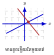
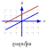
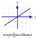
២. ដោះស្រាយប្រព័ន្ធសមីការតាមវិធីជំនួស
ឧទាហរណ៍ ៖ ដោះស្រាយប្រព័ន្ធសមីការ
\[\begin{cases}
\ \, y = 7 - 3x & (1) \\
2x - 3y = 12 & (2)
\end{cases}\]
ជំនួសតម្លៃ \(\displaystyle y = 7 - 3x\) ក្នុងសមីការ \(\displaystyle (2)\)
\[\begin{aligned}
2x - 3(7 - 3x) &= 12 \\
2x - 21 + 9x &= 12 \\
11x &= 12 + 21 \\
11x &= 33 \\
\Rightarrow x = 3
\end{aligned}\]
ជំនួសតម្លៃ \(\displaystyle x = 3\) ក្នុងសមីការ \(\displaystyle (1)\)
\[y = 7 - 3(3) = 7 - 9 = -2 \text{ ។}\]
ដូចនេះ \(\displaystyle (3, -2)\) ជាគូចម្លើយនៃប្រព័ន្ធសមីការ។
វិធាន
• ទាញអញ្ញាតមួយពីសមីការណាមួយ (រើសអញ្ញាតមានមេគុណតូចវិជ្ជមាន)។
• យកកន្សោមនោះទៅជំនួសក្នុងសមីការមួយទៀត ដើម្បីរកអញ្ញាតទី១។
• យកតម្លៃដែលរកឃើញ ទៅជំនួសក្នុងសមីការដើម ដើម្បីរកអញ្ញាតទី២។
៣. ដោះស្រាយប្រព័ន្ធសមីការតាមវិធីបូក
ឧទាហរណ៍: ដោះស្រាយប្រព័ន្ធសមីការ
\[\begin{array}{l}
\begin{cases}
-2x + y = -11 & \quad (1) \\
\ \ \, 5x - y = 26 & \quad (2)
\end{cases} \\[0.3cm]
\hline\\[-0.2cm]
\ \ \, 3x \hspace{0.75cm} = 15 \\
\hspace{0.75cm} \Rightarrow x = 5
\end{array}\]
ជំនួស \(\displaystyle x = 5\) ក្នុងសមីការ \(\displaystyle (1)\)
\[\begin{aligned}
-2(5) + y &= -11 \\
-10 + y &= -11 \\
y &= -11 + 10 = -1
\end{aligned}\]
ដូចនេះ \(\displaystyle (5, -1)\) ជាគូចម្លើយនៃប្រព័ន្ធសមីការ។
វិធាន
• គុណសមីការ ដើម្បីឱ្យមេគុណនៃអញ្ញាតណាមួយមានលេខផ្ទុយ ឬដូចគ្នា។
• បូកឬដកសមីការទាំងពីរ ដើម្បីបំបាត់អញ្ញាតនោះ រួចដោះស្រាយរកអញ្ញាតទី១។
• យកតម្លៃដែលរកឃើញ ទៅជំនួសក្នុងសមីការដើម ដើម្បីរកអញ្ញាតទី២។
៤. វិធីដេទែរមីណង់ (Determinant Method)
ដោះស្រាយប្រព័ន្ធសមីការ \(\displaystyle \begin{cases}ax+by=c\\a'x+b'y=c'\end{cases}\)
បើ \(\displaystyle D\ne0 \qquad \Rightarrow x=\frac{D_x}{D},\quad \;y=\frac{D_y}{D}\)
ចំនួនគូចម្លើយនៃប្រព័ន្ធសមីការ
ដោះស្រាយប្រព័ន្ធសមីការ \(\displaystyle \begin{cases}ax+by=c\\a'x+b'y=c'\end{cases}\)
• ប្រព័ន្ធសមីការ មានគូចម្លើយតែមួយគត់: \(\displaystyle \frac{a}{a'}\ne\frac{b}{b'}\)
• ប្រព័ន្ធសមីការ គ្មានគូចម្លើយ: \(\displaystyle \frac{a}{a'}=\frac{b}{b'}\ne\frac{c}{c'}\)
• ប្រព័ន្ធសមីការ មានគូចម្លើយរាប់មិនអស់: \(\displaystyle \frac{a}{a'}=\frac{b}{b'}=\frac{c}{c'}\)
១. ទ្រឹស្តីបទពីតាគ័រ (Pythagorean Theorem)
ទ្រឹស្ដីបទ
ក្នុងត្រីកោណកែង ការេនៃអ៊ីប៉ូតេនុស ស្មើនឹងផលបូកការេនៃជ្រុងមុំកែង ។
រូបមន្ត
បើ \(\displaystyle \triangle ABC\) កែងត្រង់ \(\displaystyle A\)
នោះ \(\displaystyle BC^2=AB^2+AC^2\)
ឬ \(\displaystyle a^2=b^2+c^2\)
ទំនាក់ទំនងរវាងរង្វាស់ជ្រុងនៃត្រីកោណកែងហៅថា ទ្រឹស្តីបទពីតាគ័រ ។
ទាញរករង្វាស់ជ្រុងមុំកែង :
\(\displaystyle \Rightarrow b=\sqrt{a^2-c^2}\) និង \(\displaystyle c=\sqrt{a^2-b^2}\)
២. ទ្រឹស្តីបទច្រាសពីតាគ័រ (Converse of Pythagorean Theorem)
ទ្រឹស្ដីបទ
បើ \(\displaystyle \triangle ABC\) មានរង្វាស់ជ្រុងផ្ទៀងផ្ទាត់ទំនាក់ទំនង
\(\displaystyle BC^2=AB^2+AC^2\)
នោះវាជា ត្រីកោណកែងត្រង់ \(\displaystyle A\)។
៣. អនុវត្តន៍ទ្រឹស្តីបទពីតាគ័រ (Applications of Pythagorean Theorem)
១. អង្កត់ទ្រូងការេ
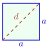
\(\displaystyle d=a\sqrt{2}\)២. កម្ពស់ត្រីកោណសម័ង្ស
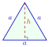
\(\displaystyle h=\frac{a\sqrt{3}}{2}\)៣. អង្កត់ទ្រូងចតុកោណកែង
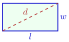
\(\displaystyle d=\sqrt{l^2+w^2}\)៤. អង្កត់ទ្រូងប្រលេពីប៉ែតកែង
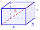
\(\displaystyle d=\sqrt{x^2+y^2+z^2}\)១. លក្ខណៈនៃអង្កត់ធ្នូ (Properties of Chords)
១.១. បន្ទាត់កែងទៅនឹងចំណុចកណ្ដាលនៃអង្កត់ធ្នូ
ជាទូទៅ
• បន្ទាត់ដែលគូសចេញពីផ្ចិតនៃរង្វង់ហើយកែង នឹង អង្កត់ធ្នូត្រូវកាត់ចំណុចកណ្ដាលនៃអង្កត់ធ្នូ ។
• ច្រាសមកវិញ: បន្ទាត់ដែលកែងទៅនឹងចំណុចកណ្ដាលនៃអង្កត់ធ្នូ ត្រូវកាត់តាមផ្ចិតនៃរង្វង់ ។
បើបន្ទាត់ \(\displaystyle L \perp AB\) ត្រង់ \(\displaystyle M\) នោះ \(\displaystyle AM = BM\)
១.២. អង្កត់ធ្នូស្មើគ្នា
ជាទូទៅ
• អង្កត់ធ្នូពីរមានប្រវែងស្មើគ្នានៅក្នុងរង្វង់មួយ ត្រូវមានចម្ងាយស្មើគ្នាពីផ្ចិតនៃរង្វង់នោះ ។
• ច្រាសមកវិញ: អង្កត់ធ្នូក្នុងរង្វង់មួយដែលមានចម្ងាយស្មើគ្នាពីផ្ចិតនៃរង្វង់ជាអង្កត់ធ្នូប៉ុនគ្នា ។
បើអង្កត់ធ្នូ \(\displaystyle AB = A'B'\) នោះ ចម្ងាយ \(\displaystyle OM = OM'\)
២. បន្ទាត់ប៉ះ (Tangent Lines)
ជាទូទៅ
បន្ទាត់ប៉ះនៃរង្វង់ត្រូវកែងទៅនឹងកាំឬអង្កត់ផ្ចិតនៃរង្វង់ត្រង់ចំណុចប៉ះ ។
បន្ទាត់ \(\displaystyle l\) ហៅថា បន្ទាត់ប៉ះទៅនឹងរង្វង់ ឬ បន្ទាត់ប៉ះ។ ម្យ៉ាងទៀតចំណុច \(\displaystyle M\) នៃបន្ទាត់ប៉ះប្រសព្វនឹងរង្វង់ហៅថា ចំណុចប៉ះ ។
៣. លក្ខណៈនៃបន្ទាត់ប៉ះ (Properties of Tangent Lines)
៣.១. បន្ទាត់ប៉ះស្របនឹងអង្កត់ធ្នូ
ជាទូទៅ
បើបន្ទាត់ប៉ះរង្វង់ស្របទៅនឹងអង្កត់ធ្នូមួយនោះ ចំណុចប៉ះចែកធ្នូសងខាងពាក់កណ្តាលប៉ុនគ្នា ។
បើបន្ទាត់ \(\displaystyle EF \parallel AB\) និង \(\displaystyle OC \perp EF\) នោះ \(\displaystyle \overparen{AC} = \overparen{BC}\) ។
៣.២. បន្ទាត់ប៉ះគូសពីចំណុចក្រៅរង្វង់
ជាទូទៅ
បើបន្ទាត់ប៉ះពីរគូសពីចំណុច \(\displaystyle A\) ក្រៅរង្វង់ ហើយប៉ះរង្វង់ត្រង់ \(\displaystyle B\) និង \(\displaystyle C\)
- បន្ទាត់ប៉ះទាំងពីរមានប្រវែងស្មើគ្នា \(\displaystyle AB=AC\)
- \(\displaystyle AO\) ជាកន្លះបន្ទាត់ពុះមុំ \(\displaystyle \angle BAC\) និង \(\displaystyle \angle BOC\)
៤. អនុវត្តន៍លក្ខណៈជ្រុងឈមនៃចតុកោណចារឹកក្រៅរង្វង់
និយមន័យ
ចតុកោណចារឹកក្រៅរង្វង់ គឺជាចតុកោណដែលមានជ្រុងទាំងបួនប៉ះរង្វង់តែមួយ។
ជាទូទៅ
ក្នុងចតុកោណចារឹកក្រៅរង្វង់ ផលបូករង្វាស់ជ្រុងឈមមានរង្វាស់ស្មើគ្នា។
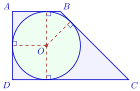
\(\displaystyle AB+CD=AD+BC\)៥. ទីតាំងរង្វង់ (Positions of Circles)
ជាទូទៅ
តាង \(\displaystyle r\) និង \(\displaystyle r'\) ជាកាំរង្វង់, \(\displaystyle d\) ជាចម្ងាយរវាងផ្ចិតទាំងពីរ (\(\displaystyle r>r'\)):
- \(\displaystyle d > r+r'\) ៖ រង្វង់គ្មានចំណុចរួម (នៅក្រៅគ្នា)
- \(\displaystyle d = r+r'\) ៖ រង្វង់ប៉ះគ្នាក្រៅ
- \(\displaystyle r-r' < d < r+r'\) ៖ រង្វង់កាត់គ្នាពីរចំណុច
- \(\displaystyle d = r-r'\) ៖ រង្វង់ប៉ះគ្នាក្នុង
- \(\displaystyle d < r-r'\) ៖ រង្វង់គ្មានចំណុចរួម (រង្វង់តូចនៅក្នុងរង្វង់ធំ)
៦. បន្ទាត់ប៉ះរួម (Common Tangents)
ជាទូទៅ
ចំនួនបន្ទាត់ប៉ះរួមនៃរង្វង់ពីរអាស្រ័យលើទីតាំងរបស់វា៖
- រង្វង់នៅក្រៅគ្នា (\(\displaystyle d>r+r'\)): មានបន្ទាត់ប៉ះរួមចំនួន ៤ (ខាងក្រៅ ២ និងខាងក្នុង ២)។
- រង្វង់ប៉ះគ្នាក្រៅ (\(\displaystyle d=r+r'\)): មានបន្ទាត់ប៉ះរួមចំនួន ៣ (ខាងក្រៅ ២ និងត្រង់ចំណុចប៉ះ ១)។
- រង្វង់កាត់គ្នា (\(\displaystyle r-r'<d<r+r'\)): មានបន្ទាត់ប៉ះរួមចំនួន ២ (ខាងក្រៅ ២)។
- រង្វង់ប៉ះគ្នាក្នុង (\(\displaystyle d=r-r'\)): មានបន្ទាត់ប៉ះរួមចំនួន ១ (ត្រង់ចំណុចប៉ះ)។
- រង្វង់តូចក្នុងរង្វង់ធំ (\(\displaystyle d<r-r'\)): គ្មានបន្ទាត់ប៉ះរួម (០)។
១. មុំផ្ចិត (Central Angles)
និយមន័យ
មុំផ្ចិត គឺជាមុំដែលមានកំពូលនៅផ្ចិតរង្វង់ ហើយជ្រុងទាំងពីរជាកាំ។
\[\angle AOB=\arc{AB}\]
ជាទូទៅ
• ក្នុងរង្វង់មួយធ្នូពីរប៉ុនគ្នា ស្កាត់ដោយមុំផ្ចិតពីរប៉ុនគ្នា។
• ច្រាសមកវិញ: កាលណាមុំផ្ចិតពីរប៉ុនគ្នានោះធ្នូស្កាត់ទាំងពីរក៏ប៉ុនគ្នា ។
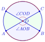
\[\arc{AB}=\arc{CD}\Longleftrightarrow \angle AOB=\angle COD\]
២. មុំចារឹកក្នុងរង្វង់
២.១. និយមន័យ
និយមន័យ
មុំចារឹកក្នុងរង្វង់ គឺជាមុំដែលមានកំពូលស្ថិតនៅលើរង្វង់ ហើយជ្រុងទាំងពីរកាត់រង្វង់ជាអង្កត់ធ្នូ ។
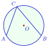
\[\angle ACB \text{ ជាមុំចារឹកក្នុងរង្វង់ស្កាត់ធ្នូ } \arc{AC}\]
២.២. មុំចារឹកក្នុងរង្វង់ និងធ្នូ
ជាទូទៅ
គ្រប់មុំចារឹកក្នុងរង្វង់មានរង្វាស់ស្មើនឹងកន្លះ រង្វាស់ធ្នូដែលស្កាត់ដោយមុំនោះ។
\[\angle ACB=\frac12\arc{AB}\]
២.៣. មុំផ្ចិត និងមុំចារឹកក្នុងរង្វង់ស្កាត់ធ្នូតែមួយ
ជាទូទៅ
មុំផ្ចិតនៃរង្វង់មួយមានរង្វាស់ស្មើនឹងពីរដងមុំចារឹកក្នុងរង្វង់ដែលស្កាត់ធ្នូតែមួយ។
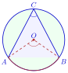
\[\angle AOB=2\angle ACB\]
២.៤. មុំចារឹកក្នុងរង្វង់ស្កាត់ធ្នូតែមួយ
ជាទូទៅ
គ្រប់មុំចារឹកក្នុងរង្វង់ដែលស្កាត់ធ្នូតែមួយ មានរង្វាស់ស្មើគ្នា ។
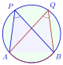
\[\angle APB=\angle AQB (\text{មុំចារឹកក្នុងរង្វង់ស្កាត់ធ្នូ } \arc{AB} \text{ តែមួយ})\]
៣. មុំចារឹកក្នុងកន្លះរង្វង់
ជាទូទៅ
គ្រប់មុំចារឹកក្នុងកន្លះរង្វង់ ជាមុំកែង។
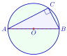
\[\text{បើ } AB \text{ ជាអង្កត់ផ្ចិត នោះ } \angle ACB=90^\circ\]
៤. មុំឈមនៃចតុកោណចារឹកក្នុងរង្វង់
៤.១. និយមន័យ
និយមន័យ
ចតុកោណដែលមានកំពូលទាំងបួនស្ថិតនៅលើរង្វង់តែមួយ ហៅថា ចតុកោណចារឹកក្នុងរង្វង់ ។ រង្វង់នេះហៅថា រង្វង់ចារឹកក្រៅចតុកោណ។ ក្នុងចតុកោណចារឹកក្នុងរង្វង់ \(\displaystyle ABCD\) ។ គេមាន \(\displaystyle \angle A\) និង \(\displaystyle \angle C\) ជាមុំឈមនឹងគ្នាហើយ \(\displaystyle \angle B\) និង \(\displaystyle \angle D\) ក៏ជាមុំឈមនឹងគ្នាដែរ ។
៤.២. លក្ខណៈមុំឈម
ជាទូទៅ
មុំឈមក្នុងចតុកោណចារឹកក្នុងរង្វង់មួយជាមុំបន្ថែមគ្នា ។
\[\angle A+\angle C=180^\circ,\qquad
\angle B+\angle D=180^\circ\]
៥. មុំក្រៅនៃចតុកោណចារឹកក្នុងរង្វង់
ជាទូទៅ
មុំក្រៅចតុកោណចារឹកក្នុងរង្វង់មានរង្វាស់ស្មើនឹងមុំឈមវានៅខាងក្នុងចតុកោណនោះ។
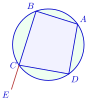
\[\angle DCE = \angle A\]
៦. មុំដែលមានកំពូលមិននៅលើរង្វង់
៦.១. មុំក្នុងរង្វង់ (Interior Angles of a Circle)
ជាទូទៅ
• មុំក្នុងរង្វង់ គឺជាមុំដែលមានកំពូលនៅក្នុងរង្វង់។
• មុំក្នុងរង្វង់មានរង្វាស់ស្មើនឹង កន្លះផលបូករង្វាស់ធ្នូស្កាត់ដោយជ្រុងនៃមុំ ។
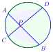
\[\angle APD=\frac12(\arc{AD}+\arc{BC})\]
៦.២. មុំក្រៅរង្វង់ (Exterior Angles of a Circle)
ជាទូទៅ
• មុំក្រៅរង្វង់ គឺជាមុំដែលមានកំពូលនៅក្រៅរង្វង់ ហើយមានជ្រុងទាំងពីរកាត់រង្វង់។
• មុំក្រៅរង្វង់មានរង្វាស់ស្មើនឹង កន្លះផលដករង្វាស់ធ្នូស្កាត់ដោយជ្រុងនៃមុំនេះ ។
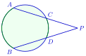
\[\angle P=\frac12(\arc{AB}-\arc{CD})\]
៧. មុំផ្គុំដោយបន្ទាត់ប៉ះ និងអង្កត់ធ្នូ
ជាទូទៅ
មុំដែលផ្គុំដោយបន្ទាត់ប៉ះរង្វង់និងអង្កត់ធ្នូគូសចេញពីចំណុចមួយនៅលើរង្វង់មានរង្វាស់ស្មើនឹងមុំចារឹកក្នុងរង្វង់ដែលមានអង្កត់ធ្នូនៅក្នុងនោះ ។
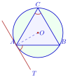
\[\angle TAB=\angle ACB=\frac12\arc{AB}\]
រូបមន្ត
• ផ្ទៃក្រឡាចម្រៀកថាស :
\[S_{AOB} = \pi r^2 \times \frac{\alpha^\circ}{360^\circ}\]
• ប្រវែងធ្នូ :
\[\arc{AB} = 2\pi r \times \frac{\alpha^\circ}{360^\circ}\]
១. បន្ទាត់ស្រប និងខ្នាត់
ជាទូទៅ
បើបន្ទាត់ស្របកំណត់នៅលើខ្នាត់មួយបានអង្កត់ប៉ុនគ្នា នោះវាកំណត់នៅលើខ្នាត់ផ្សេងទៀតក៏បានអង្កត់ប៉ុនគ្នាដែរ ។
បន្ទាត់ \(\displaystyle AA' \parallel BB' \parallel CC'\parallel DD'\) ហៅថា បន្ទាត់ស្របស្មើចម្ងាយ ។
បើនៅលើខ្នាត់ \(\displaystyle d\) កំណត់បានអង្កត់
\[AB=BC=CD\]
នោះ កំណត់លើខ្នាត់ \(\displaystyle d'\) បានអង្កត់
\[A'B'=B'C'=C'D'\]
២. ទ្រឹស្តីបទតាលែស
ទ្រឹស្តីបទតាលែស
ទ្រឹស្តីបទតាលែស : បើបន្ទាត់ច្រើនស្របគ្នានៅលើខ្នាត់ពីរកំណត់បានអង្កត់សមាមាត្រគ្នា ។
- ផលធៀបខ្នាត់តែម្ខាង : \(\displaystyle \frac{AB}{BC}=\frac{A'B'}{B'C'}\)
- ផលធៀប \(\displaystyle \frac{\text{ខ្នាត់ }\rule[-0.5em]{0pt}{1.55em} d}{\text{ខ្នាត់ }\rule[-0.5em]{0pt}{1.55em} d'}\) : \(\displaystyle \frac{AB}{A'B'}=\frac{BC}{B'C'}=\frac{AC}{A'C'}\)
៣. អនុវត្តន៍ក្នុងត្រីកោណ និងចតុកោណ
៣.១. អនុវត្តន៍ក្នុងត្រីកោណ
ជាទូទៅ
បើបន្ទាត់ស្របទៅនឹងជ្រុងមួយនៃត្រីកោណផ្គុំជាមួយជ្រុងពីរទៀត បានត្រីកោណថ្មីមួយដែលត្រីកោណទាំងពីរនោះមានជ្រុងសមាមាត្រគ្នា ។
ក្នុង \(\displaystyle \triangle ABC\) បើ \(\displaystyle E\in AB,\;F\in AC\) និង \(\displaystyle EF\parallel BC\) នោះ
\[\frac{\textbf{\color{#0000cc}ជ្រុងត្រីកោណថ្មី}}{\textbf{\color{#0000cc}ជ្រុងត្រីកោណដើម}} : \frac{AE}{AB}=\frac{AF}{AC}=\frac{EF}{BC}\]
- ផលធៀបបន្ថែម :
\[\frac{AE}{EB}=\frac{AF}{FC},\qquad
\frac{AB}{AE}=\frac{AC}{AF}=\frac{BC}{EF}\]
ទ្រឹស្តីបទច្រាសតាលែស
ក្នុង \(\displaystyle \triangle ABC\) បើ \(\displaystyle E\in AB\) និង \(\displaystyle F\in AC\) ហើយ
\[\frac{AE}{AB}=\frac{AF}{AC}
\qquad \text{ឬ} \qquad
\frac{AE}{EB}=\frac{AF}{FC}\]
នោះ គេបាន \(\displaystyle EF\parallel BC\)។
ទ្រឹស្ដីបទចំណុចកណ្ដាល
• ក្នុងត្រីកោណ \(\displaystyle ABC\)
\[EF \parallel BC \quad , E \text{ កណ្ដាល } AB \quad \text{និង} F \text{ កណ្ដាល } AC\]
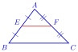
\[EF \text{ ហៅថា } \textbf{\color{#0000cc} បាតមធ្យមនៃត្រីកោណ }
\text{នោះ } EF = \frac{BC}{2}\]
៣.២. អនុវត្តន៍ក្នុងចតុកោណព្នាយ
ជាទូទៅ
• បើបន្ទាត់មួយស្របទៅនឹងបាតនៃចតុកោណព្នាយមួយកាត់ជ្រុងមិនស្រប ឬបន្លាយនៃជ្រុងមិនស្របកំណត់បានអង្កត់សមាមាត្រគ្នា ។
• ច្រាសមកវិញ: បើបន្ទាត់មួយកាត់ជ្រុងមិនស្រប ឬបន្លាយនៃជ្រុងមិនស្របនៃចតុកោណព្នាយមួយកំណត់បានអង្កត់សមាមាត្រគ្នា បន្ទាត់នោះត្រូវស្របនឹងបាតទាំងពីរ ។
ក្នុងចតុកោណព្នាយ \(\displaystyle ABCD\) បើ \(\displaystyle AB\parallel EF\parallel DC\) នោះ
\[\frac{AE}{AD}=\frac{BF}{BC},\qquad
\frac{DE}{AD}=\frac{CF}{BC}\]
\[\frac{AE}{DE}=\frac{BF}{FC},\qquad
\frac{AD}{AE}=\frac{BC}{BF}\]
១. ត្រីកោណដូចគ្នា
១.១. សញ្ញាណ
និយមន័យ
ត្រីកោណពីរជាត្រីកោណដូចគ្នាកាលណាវាមាន
- មុំទាំងបីប៉ុនគ្នារៀងគ្នា
- ជ្រុងទាំងបីសមាមាត្ររៀងគ្នា
- ផលធៀបសមាមាត្រហៅថា ផលធៀបដំណូច។
កំណត់សម្គាល់
ចំណាំ
\[\sim\left.\begin{array}{l}
\triangle A'B'C' \\[0.2cm]
\triangle ABC
\end{array}\right| \Rightarrow \frac{A'B'}{AB}=\frac{A'C'}{AC}=\frac{B'C'}{BC}=k\]
ត្រីកោណដូចគ្នា តាមទ្រឹស្ដីបទពីតាលែស
ក្នុង \(\displaystyle \triangle ABC\) , \(\displaystyle D\in AB,\;E\in AC\)
បើ \(\displaystyle DE\parallel BC\) នោះ \(\displaystyle \triangle ADE\sim\triangle ABC\)
១.២. ករណីដំណូច
ដើម្បីឱ្យត្រីកោណពីរដូចគ្នា គេគ្រាន់តែរកឱ្យឃើញមុំខ្លះៗប៉ុនគ្នា ឬជ្រុងទាំងបីសមាមាត្ររៀងគ្នា តាមករណីដូចខាងក្រោម ។
ក. ករណីដំណូចទី១ (ម.ម)
ជាទូទៅ
ត្រីកោណពីរជាត្រីកោណដូចគ្នា កាលណាវាមានមុំពីរគូប៉ុនគ្នារៀងគ្នា។
ចំណាំ
បើ \(\displaystyle \triangle ABC \sim \triangle A'B'C'\) គេអាចទាញបាន
| សម្មតិកម្ម | សន្និដ្ឋាន | វិបាក |
| \(\displaystyle \begin{array}{l}
\color{#0000cc}\angle A = \angle A' \\
\color{#0000cc}\angle B = \angle B'
\end{array}\) | \(\displaystyle \begin{array}{c}
\color{#0000cc}\triangle ABC \\[0.4ex]
\color{#0000cc}\sim \\[0.4ex]
\color{#0000cc}\triangle A'B'C'
\end{array}\) | \(\displaystyle \begin{array}{l}
\color{#0000cc}\angle C = \angle C' \\[2ex]
\color{#0000cc}\dfrac{AB}{A'B'} = \dfrac{AC}{A'C'} = \dfrac{BC}{B'C'} \\[0.6ex]
\end{array}\) |
ខ. ករណីដំណូចទី២ (ជ.ម.ជ)
ជាទូទៅ
ត្រីកោណពីរដូចគ្នា កាលណាមានមុំមួយប៉ុនគ្នារៀងគ្នា អមដោយជ្រុងពីរសមាមាត្រ។
ចំណាំ
បើ \(\displaystyle \triangle ABC \sim \triangle A'B'C'\) គេអាចទាញបាន
| សម្មតិកម្ម | សន្និដ្ឋាន | វិបាក |
| \(\displaystyle \begin{array}{l}
\color{#0000cc}\angle A = \angle A' \\[1.6ex]
\color{#0000cc}\dfrac{AB}{A'B'} = \dfrac{AC}{A'C'} = k \\[0.8ex]
\end{array}\) | \(\displaystyle \begin{array}{c}
\color{#0000cc}\triangle ABC \\[0.4ex]
\color{#0000cc}\sim \\[0.4ex]
\color{#0000cc}\triangle A'B'C'
\end{array}\) | \(\displaystyle \begin{array}{l}
\color{#0000cc}\angle B = \angle B' \\
\color{#0000cc}\angle C = \angle C' \\[1ex]
\color{#0000cc}\dfrac{BC}{B'C'} = k \\[0.8ex]
\end{array}\) |
១.៣. ករណីដំណូចទី៣ (ជ.ជ.ជ)
ជាទូទៅ
ត្រីកោណពីរដូចគ្នា កាលណាវាមានជ្រុងទាំងបីសមាមាត្ររៀងគ្នា។
ចំណាំ
បើ \(\displaystyle \triangle ABC \sim \triangle A'B'C'\) គេអាចទាញបាន
| សម្មតិកម្ម | សន្និដ្ឋាន | វិបាក |
| \(\displaystyle \color{#0000cc}\dfrac{AB}{A'B'} = \dfrac{BC}{B'C'} = \dfrac{CA}{C'A'}\) | \(\displaystyle \begin{array}{c}
\color{#0000cc}\triangle ABC \\[0.4ex]
\color{#0000cc}\sim \\[0.4ex]
\color{#0000cc}\triangle A'B'C'
\end{array}\) | \(\displaystyle \begin{array}{l}
\color{#0000cc}\angle A = \angle A' \\
\color{#0000cc}\angle B = \angle B' \\
\color{#0000cc}\angle C = \angle C'
\end{array}\) |
២. ទំនាក់ទំនងមាត្រក្នុងត្រីកោណកែង
ទ្រឹស្ដីបទ
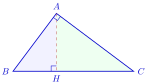
ក្នុងត្រីកោណកែង រង្វាស់ជ្រុងមួយនៃមុំកែងជាមធ្យមសមាមាត្ររវាង អ៊ីប៉ូតេនុស និងចំណោលកែងរបស់វាលើអ៊ីប៉ូតេនុស។
\[AC^2 = BC \times HC \quad\text{ឬ}\quad AB^2 = BC \times HB\]
ក្នុងត្រីកោណកែង រង្វាស់កម្ពស់ត្រូវនឹងអ៊ីប៉ូតេនុសជាមធ្យមសមាមាត្ររវាងអង្កត់ដែលវាកំណត់បានលើអ៊ីប៉ូតេនុស។
\[HA^2 = HB \times HC\]
ក្នុងត្រីកោណកែង ផលគុណរវាងជ្រុងមុំកែងទាំងពីរស្មើនឹងផលគុណរវាងអ៊ីប៉ូតេនុស និងកម្ពស់ត្រូវនឹងអ៊ីប៉ូតេនុស។
\[AB \times AC = BC \times AH\]
ក្នុងត្រីកោណកែង ការេអ៊ីប៉ូតេនុសស្មើនឹងផលបូកការេនៃជ្រុងមុំកែង។
\[BC^2 = AB^2 + AC^2\]
ក្នុងត្រីកោណកែង ផលបូកចម្រាសការេនៃជ្រុងមុំកែងស្មើនឹងចម្រាសការេនៃកម្ពស់ចំពោះអ៊ីប៉ូតេនុស។
\[\frac{1}{AC^2} + \frac{1}{BA^2} = \frac{1}{HA^2}\]
តារាងសង្ខេបរូបមន្ត
ក្នុង \(\displaystyle \triangle \perp ABC\) មានកម្ពស់ \(\displaystyle AH\)
តាម ទំនាក់ទំនងមាត្រក្នុងត្រីកោណកែង
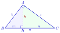
| 1. | \(\displaystyle AC^2 = BC \times HC\) | ឬ | \(\displaystyle c^2 = an\) |
| \(\displaystyle AB^2 = BC \times HB\) | ឬ | \(\displaystyle b^2 = am\) |
| 2. | \(\displaystyle HA^2 = HC \times HB\) | ឬ | \(\displaystyle h^2 = nm\) |
| 3. | \(\displaystyle AB \times AC = BC \times AH\) | ឬ | \(\displaystyle bc = ah\) |
| 4. | \(\displaystyle BC^2 = AB^2 + AC^2\) | ឬ | \(\displaystyle a^2 = b^2 + c^2\) |
| 5. | \(\displaystyle \dfrac{1}{AC^2} + \dfrac{1}{BA^2} = \dfrac{1}{HA^2}\) | ឬ | \(\displaystyle \dfrac{1}{c^2} + \dfrac{1}{b^2} = \dfrac{1}{h^2}\) ។ |
១. និយមន័យ
គេកំណត់ឈ្មោះពហុកោណប៉ោង ទៅតាមចំនួនជ្រុងរបស់វា ។
| ឈ្មោះពហុកោណ | ចំនួនជ្រុង | រូប |
| ត្រីកោណ | ៣ | |
| ចតុកោណ | ៤ | |
| បញ្ចកោណ | ៥ | |
| ឆកោណ | ៦ | |
| សប្តកោណ | ៧ | |
| អដ្ឋកោណ | ៨ | |
| នវកោណ | ៩ | |
| ទសកោណ | ១០ | |
២. ផលបូកមុំក្នុងនៃពហុកោណ
និយមន័យ
ផលបូករង្វាស់មុំក្នុងនៃពហុកោណដែលមាន \(\displaystyle n\) ជ្រុងស្មើនឹង
\[(n-2)\times180^\circ \text{ ។}\]
៣. ផលបូករង្វាស់មុំក្រៅនៃពហុកោណ
ជាទូទៅ
ផលបូករង្វាស់មុំក្រៅនៃគ្រប់ពហុកោណប៉ោង មានរង្វាស់ស្មើ \(\displaystyle 360^\circ\) ។
សំគាល់
ផលបូករង្វាស់មុំក្រៅនេះ មិនអាស្រ័យនឹងចំនួនជ្រុងពហុកោណទេ ។
៤. រង្វាស់មុំនៃពហុកោណនិយ័ត
ឧទាហរណ៍: គេមាន ការេ បញ្ចកោណនិយ័តដូចរូបខាងក្រោម
ពហុកោណនីមួយៗខាងលើមានមុំទាំងអស់ប៉ុនគ្នា និងជ្រុងទាំងអស់ប៉ុនគ្នាហៅថា ពហុកោណនិយ័ត ។
លក្ខណៈផ្សេងៗ
• ចំនួនអង្កត់ទ្រូងទាំងអស់ នៃពហុកោណដែលមាន \(\displaystyle n\) ជ្រុង ស្មើនឹង
\[d = \frac{n(n-3)}{2} \text{ ។}\]
• ចំណាំ: អង្កត់ទ្រូងពហុកោណជាអង្កត់ភ្ជាប់កំពូលពីរមិនជាប់គ្នា ។
ផ្ទៃក្រឡាពហុកោណនិយ័ត: \(\displaystyle S = \frac{1}{2} ap\)
(ដែល \(\displaystyle a\) ជាអាប៉ូតែម និង \(\displaystyle p\) ជាបរិមាត្រ)
១. ផ្ទៃក្រឡាខាង និងមាឌនៃសូលីត
ធាតុសំខាន់ៗនៃសូលីត
ធាតុសំខាន់ៗ នៃកោណ
ធាតុសំខាន់ៗ នៃពីរ៉ាមីតនិយ័ត
និយមន័យ
សូលីត គឺជារូបធរណីមាត្រដែលស្ថិតនៅក្នុងលំហ និងមានវិមាត្រ៣ គឺ បណ្តោយ ទទឹង និងកម្ពស់។ សូលីតមានមាឌ ហើយអាចមានផ្ទៃក្រឡាខាង និងផ្ទៃក្រឡាទាំងអស់។
ឧទាហរណ៍៖ ព្រីស ពីរ៉ាមីត ស៊ីឡាំង កោណ និងស្វ៊ែរ។
អាប៉ូតែម៖ ជាកម្ពស់លំអៀងនៃមុខចំហៀងរបស់ពីរ៉ាមីតនិយ័ត ដែលគូសពីកំពូលទៅកាន់ចំណុចកណ្តាលនៃជ្រុងបាត។
ជនេត្រ៖ ជាអង្កត់ត្រង់ដែលភ្ជាប់ពីកំពូលកោណទៅកាន់ចំណុចណាមួយនៅលើរង្វង់បាត។
១.១. ផ្ទៃក្រឡាខាងនៃសូលីត
ជាទូទៅ
ផ្ទៃក្រឡាខាងនៃពីរ៉ាមីតនិយ័តស្មើនឹងផលគុណរវាងកន្លះបរិមាត្របាតនឹង អាប៉ូតែម
\[S_L = \dfrac{1}{2} \times p \times a\]
(\(\displaystyle p\) : បរិមាត្រពហុកោណនិយ័តបាត , \(\displaystyle a\) : អាប៉ូតែម)។
សម្រាយ
បើបំបែកពីរ៉ាមីតនិយ័តចេញ នោះមុខចំហៀងជាត្រីកោណប៉ុនៗគ្នា។
\[\begin{aligned}
S_L &= 4 \times S_{\triangle CDS} \\[1ex]
&= 4 \times \dfrac{1}{2}DC \times HS \\[1ex]
&= \dfrac{1}{2} \times \underbrace{4DC}_{\text{\color{#b43232} បរិមាត្របាត}} \times \underbrace{HS}_{\text{\color{#b43232} អាប៉ូតែម}}
\end{aligned}\]
ផ្ទៃក្រឡាខាងកោណ
ជាទូទៅ
• ផ្ទៃក្រឡាខាងនៃកោណគឺ \(\displaystyle S_L=\pi Ra\) (\(\displaystyle R\) កាំបាត , \(\displaystyle a\) ជនេត្រ)
• ផ្ទៃក្រឡាទាំងអស់គឺ \(\displaystyle S_T=\pi Ra+\pi R^2=\pi R(a+R)\)
សម្រាយ
ផ្ទៃក្រឡាខាងនៃកោណ ជាផ្នែកមួយនៃថាស ដែលមានកាំ \(\displaystyle a\) និងប្រវែងធ្នូ \(\displaystyle 2\pi R\)។ ផ្ទៃក្រឡាថាសគឺ \(\displaystyle \pi a^2\) និងបរិមាត្រថាសគឺ \(\displaystyle 2\pi a\)។
\[\begin{aligned}
\dfrac{\pi a^2}{S} &= \dfrac{2\pi a}{2\pi R} \\[2ex]
S &= \dfrac{2\pi^2Ra^2}{2\pi a} = \pi Ra
\end{aligned}\]
១.២. មាឌនៃសូលីត
មាឌនៃពីរ៉ាមីត
ជាទូទៅ
\[V = \dfrac{1}{3} S_B \times h\]
(\(\displaystyle h\) : កម្ពស់, \(\displaystyle S_B\) : ផ្ទៃក្រឡាបាត)។
មាឌនៃកោណ
ជាទូទៅ
\[V = \dfrac{1}{3}\pi R^2 h\]
(\(\displaystyle h\) : កម្ពស់, \(\displaystyle R\) : កាំបាត)។
មាឌនៃស្វ៊ែរ / ប៊ូល
ជាទូទៅ
\[\begin{aligned}
\text{មាឌ} \qquad V &= \dfrac{4}{3}\pi R^3 \\[1ex]
\text{ផ្ទៃក្រឡាខាង} \qquad S &= 4\pi R^2
\end{aligned}\]
២. ផលធៀបផ្ទៃក្រឡា និងមាឌនៃរូបដូចគ្នា
២.១. ផលធៀបផ្ទៃក្រឡានៃរូបដូចគ្នា
ជាទូទៅ
កាលណារូបពីរដូចគ្នា ផលធៀបរវាងផ្ទៃក្រឡា ស្មើនឹងការេនៃផលធៀប រវាងធាតុត្រូវគ្នាពីរ។
រូបមន្ត
\[\dfrac{S_A}{S_B}=\left(\dfrac{a_1}{a_2}\right)^2=\left(\dfrac{b_1}{b_2}\right)^2=k^2\]
(\(\displaystyle k\) : ផលធៀបរង្វាស់ជ្រុង)។
២.២. ផលធៀបមាឌនៃសូលីតដូចគ្នា
ជាទូទៅ
កាលណាសូលីតពីរដូចគ្នា ផលធៀបរវាងមាឌ ស្មើនឹងគូបនៃផលធៀប រវាងធាតុត្រូវគ្នាពីរ។
រូបមន្ត
\[\dfrac{V_1}{V_2}=\left(\dfrac{a_1}{a_2}\right)^3=\left(\dfrac{b_1}{b_2}\right)^3=\left(\dfrac{c_1}{c_2}\right)^3=k^3\]
(\(\displaystyle k\) : ផលធៀបរង្វាស់ជ្រុង)។
ម៉ាសមាឌ :
\[\mu = \frac{m}{V} \implies m = \mu \times V\]
(\(\displaystyle m\) : ម៉ាស , \(\displaystyle V\) : មាឌ , \(\displaystyle \mu\) : ម៉ាសមាឌ)
១. ផលធៀបក្នុងត្រីកោណមាត្រ
ជាទូទៅ
ក្នុងត្រីកោណ \(\displaystyle ABC\) កែងត្រង់ \(\displaystyle C\) បើ \(\displaystyle A\) ជាមុំស្រួច
\[\begin{aligned}
\sin A&=\dfrac{\text{ឈម}\rule[-0.5em]{0pt}{1.55em}}{\text{អ៊ីប៉ូតេនុស}\rule[-0.5em]{0pt}{1.55em}}=\dfrac{a}{c}\\[1ex]
\cos A&=\dfrac{\text{ជាប់}\rule[-0.5em]{0pt}{1.55em}}{\text{អ៊ីប៉ូតេនុស}\rule[-0.5em]{0pt}{1.55em}}=\dfrac{b}{c}\\[1ex]
\tan A&=\dfrac{\text{ឈម}\rule[-0.5em]{0pt}{1.55em}}{\text{ជាប់}\rule[-0.5em]{0pt}{1.55em}}=\dfrac{a}{b}\\[1ex]
\cot A&=\dfrac{\text{ជាប់}\rule[-0.5em]{0pt}{1.55em}}{\text{ឈម}\rule[-0.5em]{0pt}{1.55em}}=\dfrac{b}{a}
\end{aligned}\]
រូបមន្តរកជ្រុង
\[a=c\sin A=b\tan A,\qquad
b=c\cos A=\frac{a}{\tan A}\]
\[c=\frac{a}{\sin A}=\frac{b}{\cos A},\qquad
\tan A=\frac{\sin A}{\cos A}\]
២. តម្លៃមុំនៃត្រីកោណពិសេស
ត្រីកោណកន្លះសម័ង្ស
\(\displaystyle \begin{array}{c}
\text{ជ្រុងឈម } 30^\circ : \text{ជ្រុងឈម } 60^\circ : \text{អ៊ីប៉ូតេនុស} \\[1ex]
= 1 : \sqrt3 : 2
\end{array}\)
ត្រីកោណកែងសមបាត
\(\displaystyle \begin{array}{c}
\text{ជ្រុងកែង} : \text{ជ្រុងកែង} : \text{អ៊ីប៉ូតេនុស} \\[1ex]
= 1 : 1 : \sqrt2
\end{array}\)
៣. តម្លៃនៃមុំពិសេស
តម្លៃនៃមុំពិសេស
| មុំ | \(\displaystyle \mathbf{30^\circ}\) | \(\displaystyle \mathbf{45^\circ}\) | \(\displaystyle \mathbf{60^\circ}\) | \(\displaystyle \mathbf{90^\circ}\) | \(\displaystyle \mathbf{120^\circ}\) | \(\displaystyle \mathbf{180^\circ}\) |
| \(\displaystyle \sin\) | \(\displaystyle \dfrac12\) | \(\displaystyle \dfrac{\sqrt2}{2}\) | \(\displaystyle \dfrac{\sqrt3}{2}\) | \(\displaystyle 1\) | \(\displaystyle \dfrac{\sqrt3}{2}\) | \(\displaystyle 0\) |
| \(\displaystyle \cos\) | \(\displaystyle \dfrac{\sqrt3}{2}\) | \(\displaystyle \dfrac{\sqrt2}{2}\) | \(\displaystyle \dfrac12\) | \(\displaystyle 0\) | \(\displaystyle -\dfrac12\) | \(\displaystyle -1\) |
| \(\displaystyle \tan\) | \(\displaystyle \dfrac{\sqrt3}{3}\) | \(\displaystyle 1\) | \(\displaystyle \sqrt3\) | \(\displaystyle \|\) | \(\displaystyle -\sqrt3\) | \(\displaystyle 0\) |
| \(\displaystyle \cot\) | \(\displaystyle \sqrt3\) | \(\displaystyle 1\) | \(\displaystyle \dfrac{\sqrt3}{3}\) | \(\displaystyle 0\) | \(\displaystyle -\dfrac{\sqrt3}{3}\) | \(\displaystyle \|\) |